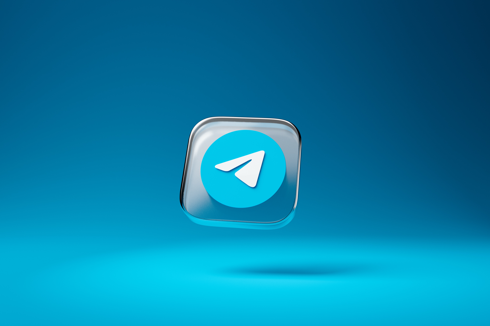

CONTATO
- 
-

-

-

-

-

Bom como começar a descrever como seria a nossa comunidade, primeiro começo descrevendo quem sou eu, me chamo Dev Alencar um estudante eterno de tecnologia, atualmente cursando ciências da computação, afins de tentar alcançar metas e objetivos, pois bem não é sobre mim que estamos falando e sim da comunidade AutoDevs.
Foi ou esta sendo uma iniciativa minha com ajuda de alguns amigos na criação de um grupo de telegram com o maior foco para pessoas assim como eu autodidatas e que amam a tecnologia em geral quero postar vários cursos, tutoriais, troca de informações e conhecimento, bem acredito que falei quase tudo sobre o que eu gostaria que fosse a comunidade AutoDevs, e como eu gostaria que ela se desenvolvesse quero expandir o conhecimento que assim como voçê eu sei o quanto e difícil de conseguir por aí onde a ganancia das pessoas ja estão ultrapassando todas as barreiras, quero levar ate todos o conhecimento e assim também poder gerar e descobrir mais conhecimento em troca.
O objetivo, vamos focar no que interessa uma comunidade de tecnologia e aprendizado, focar em cursos focar em video aulas e varias outras coisas relacionadas a codificação programação e muito mais, ou seja o objetivo mesmo é o conhecimento em todas as áreas, conhecimento talvez seja o maior objetivo a comunidade Auto Devs vai focar nisso em ajuda, busca e troca de conhecimento e, ao mesmo tempo passar a diante tudo que sabe.
Todos nós sabemos algo que e algum lugar alguém não sabe ainda e por mais que a tecnologia e a ‘internet’ hoje possibilite a informação facilitada a todos nem sempre sabemos tudo aliás nunca saberemos tudo então esse é e vai ser o maior dos objetivos da comunidade, o objetivo de levar para o maior número de pessoas o conhecimento, que em muitas vezes eu vejo as pessoas cobrando para isso aqui eu quero que seja de graça em forma de toca.
A meta, como meta não só da comunidade mas também de vida, são tantas que talvez só alguns parágrafos não seriam capazes de descrever, mais vamos lá, tenho como meta buscar conhecimento e manter a qualidade do grupo e da comunidade em si, tenho também como meta servir buscar e trocar conhecimento, tentar manter a paz e a organização.
Temos também a meta de conviver todos os dias com respeito para aqueles que estão começando que não sabem nada ou sabem pouco sobre programação, meta de sempre ajudar o próximo sendo ele experiente ou novato, e a meta de sempre saber que o que você não quer para você não vai querer para com próximo, temos também a meta de encarar com sabedoria todas as adversidades da vida, e como um todo a meta de fazer dar certo todo nosso projeto que não e meu nem seu e sim de todos.